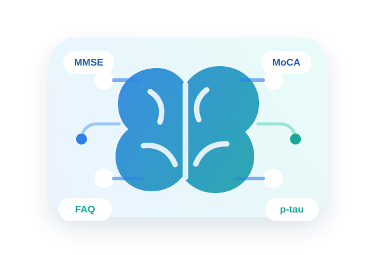

临床检查预测模块
AD临床检查辅助诊断
面向医生接诊场景，整合患者认知量表、日常功能、精神行为表现、遗传风险与基础病史等信息， 生成结构化风险提示和分级参考，帮助医生更快梳理后续评估重点。 支持单例录入与检查表上传，结果应结合病史、查体、影像和实验室检查综合解读。

患者检查指标录入
请按本次接诊或检查记录录入，系统将自动整理风险提示与分级建议。
面向医生接诊场景，整合患者认知量表、日常功能、精神行为表现、遗传风险与基础病史等信息， 生成结构化风险提示和分级参考，帮助医生更快梳理后续评估重点。 支持单例录入与检查表上传，结果应结合病史、查体、影像和实验室检查综合解读。

请按本次接诊或检查记录录入，系统将自动整理风险提示与分级建议。